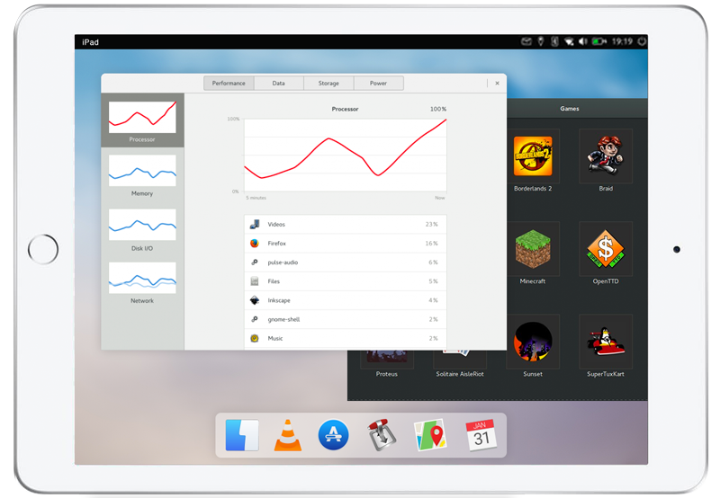
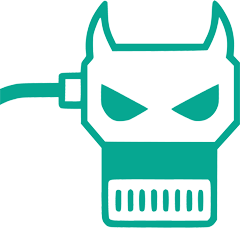
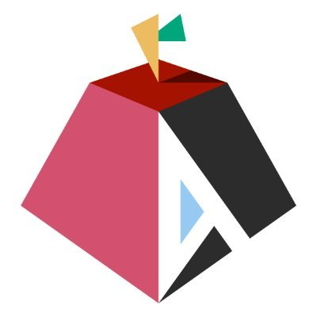
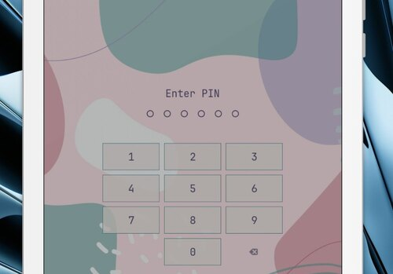

The iPad is too powerful to not get the Linux treatment.
Linux on iPad
iPad Linux tracks community efforts to run Linux on iPads, especially the models Apple no longer supports. Those iPads still work, and with Linux they could keep going as cheap computers or parts for projects.
Releases
Projects that run Linux directly on iPad hardware, not inside an app.
These projects rely on jailbreaks and boot exploits, which can leave an iPad unusable or erase its data. Back up first, and only use a device you can afford to lose.
No projects match these filters.
Omarchy A
by Henrik Klee, OrchardLinux · Updated November 2026
- Installable
- Touch
- Wi-Fi
- Bluetooth
- Speakers
- GPU desktop (iPad 6, 7)
- Tethered boot
Omarchy A
by Henrik Klee, OrchardLinux · Updated November 2026
A bootable Arch Linux ARM desktop for the iPad, with Omarchy's look adapted for touch. The current release is v0.3.2 (November 18, 2026). The iPad 6 Wi-Fi model is the supported install: Omarchy A goes on the tablet's storage, beside iPadOS, and the desktop is drawn by the GPU. Orchard is the hardware support, kernel patches, and the tool that builds, boots, and installs it. The iPad 7 Wi-Fi, both iPad 5 Wi-Fi boards, the iPad Air 2, and the iPhone 6 are experimental support in Orchard.
- iPad (6th gen, Wi-Fi, J71b) · Apple A10 · supported
- iPad (7th gen, Wi-Fi, J171) · Apple A10 · experimental
- iPad (5th gen, Wi-Fi, TSMC, J71t) · Apple A9 · experimental
- iPad (5th gen, Wi-Fi, Samsung, J71s) · Apple A9 · experimental, RAM boot
- iPad Air 2 (Wi-Fi) · Apple A8X · experimental
- iPhone 6 · Apple A8 · experimental
What you need: for the supported install, the iPad 6 Wi-Fi model on iPadOS 16 or later, a Mac or Linux computer, and a USB data cable. Free at least 9 GB that iPadOS is not using, with Resize APFS. Put the iPad in DFU and run:
curl -fsSL https://github.com/OrchardLinux/omarchy-a/releases/latest/download/install.sh | sh
That installs the latest release, which is v0.3.2. On a tablet already running v0.3.2 or later, omarchy-update (or Update > Omarchy) brings in the next release without reinstalling. An install from the previous installer, one Linux partition and no boot partition, cannot be converted; the installer says so before it erases that partition. The same installer can target an experimental board when Orchard marks it installable, and it shows that status before it writes anything.
On the iPad 6, Linux lives on its own partition beside iPadOS. A cold start still needs a computer: put the iPad in DFU and run orchard launch. Sleep and wake do not start Linux on their own. The desktop signs in as tablet. You choose a sudo password and a 6-digit lock PIN during install. There is no disk encryption, and the boot exploit gives anyone holding the device full access. Use a spare iPad.
Working on the iPad 6 Wi-Fi
Maintainer-supported. This is the only supported device (iPad7,5, J71b).
- Omarchy A, a touch desktop on Arch Linux ARM, drawn by the GPU
- Multitouch, swipes, hardware buttons, and an on-screen keyboard
- Wi-Fi, Bluetooth, and Bluetooth audio
- Speakers, the built-in microphone, and the headphone jack
- The screen rotates with the iPad
- Suspend and resume
- Firefox plays H.264 video, including YouTube, through the hardware decoder
- A boot partition and a Linux system on the internal storage, beside iPadOS
- Battery level, backlight, and charging
- One DFU session downloads the release, writes it, and starts the desktop
Experimental
In Orchard, and not the supported Omarchy A install. Feature reports below are Orchard's; the iPad 6 Wi-Fi line above is the maintainer-supported release.
- iPad 7 Wi-Fi (J171) can be installed. Orchard v0.3.2 marks the GPU desktop, sleep, hardware video, and Bluetooth audio working end to end. Speakers, the microphone, and the headphone jack work. The cameras are missing.
- iPad 5 Wi-Fi, TSMC (J71t) can be installed. Orchard marks its GPU driver ready for testing, in the same driver as the iPad 6 and 7. That is not a finished GPU desktop.
- iPad 5 Wi-Fi, Samsung (J71s) still boots from RAM and is mostly untested.
- iPad Air 2 Wi-Fi: a RAM boot with display, touch, Wi-Fi, battery level, backlight, and buttons. Linux does not go on its storage.
- iPhone 6: a tethered RAM boot to a console, with touch. Wi-Fi, Bluetooth, and installing onto its storage are still open.
- iPhone 7 and 7 Plus have device profiles in Orchard. They have not been qualified on hardware.
- Orchard bring-up only: iPad mini 4 Wi-Fi, RAM only (Tom Ballard), and iPhone X GSM (Eduardo Martins).
Shortcomings
- Every cold start needs a computer and DFU mode. Sleep and wake do not boot the iPad on their own.
- The cameras are missing.
- There is no disk encryption.
- On the iPad 6 and 7, Firefox reaches the hardware decoder only with its media-decoding sandbox off (
MOZ_DISABLE_RDD_SANDBOX=1), which the login session sets. A video that exploits a decoder bug is not contained by that sandbox. The sandbox around web pages stays on.
Built on
Built on checkm8 by axi0mX, palera1n and PongoOS, m1n1 from Asahi Linux, Hoolock Linux, and Project Sandcastle. iPad 7 touch work by Pauli1Go. iPad 6 speakers and rotation work by Dalton Alexandre. iPad 7 speakers by Duke Eagleman. iPad Air 2 support comes from Martin Puškáč's port, brought over by micro23. iPad 5 support comes from Berkay Kösebay. iPad mini 4 Wi-Fi bring-up by Tom Ballard. iPhone X GSM bring-up by Eduardo Martins.
Project Cascadia
by rzxvx · Updated November 2026
- Installs beside iOS
- Boots alone (mini 1)
- GPU desktop
- Touch
- Wi-Fi
- Bluetooth
- Speakers
Project Cascadia
by rzxvx · Updated November 2026
Linux on Apple's own chips. On the Wi-Fi iPad mini 1, Alpine and a GPU desktop live on the iPad's flash beside iOS, and an app on the home screen starts Linux with no computer. The iPhone 11 runs a touch desktop and still needs a computer to boot. The iPad 2 is an experimental port from the same maintainer. The iPhone XR, iPad 8, and iPhone XS Max are contributed reports; the maintainer has not tested those three. Prebuilt releases are the iPad mini 1 only.
- iPad mini (1st gen, Wi-Fi, iPad2,5) · Apple A5
- iPad 2 (Wi-Fi) · Apple A5 · experimental
- iPhone 11 · Apple A13 · tethered
- iPhone XR · Apple A12 · experimental, contributed
- iPad (8th gen, Wi-Fi) · Apple A12 · experimental, contributed
- iPhone XS Max · Apple A12 · contributed, not tested by the maintainer
- The install is for the Wi-Fi iPad mini 1 (iPad2,5). The cellular models, iPad2,6 and iPad2,7, are not supported.
- iOS 8.4.1 (12H321) only. The installer and the app refuse any other version.
- Going back from a jailbroken iOS 9 with Legacy iOS Kit wipes the iPad.
- The install needs a jailbreak with OpenSSH, and a Mac or Linux computer with Docker.
- It shrinks iOS's Data partition (8 GB by default, 4 GB at least) and rewrites the partition table. Back the iPad up first.
- Uninstalling gives that space back to iOS and removes the app.
- On the iPhone 11, giving the internal storage to Linux erases iOS.
- This is experimental low-level work, and it can damage the hardware.
iPad mini 1 (Wi-Fi) · maintainer-tested
What you need: an iPad mini 1 Wi-Fi (iPad2,5 / A1432) on iOS 8.4.1 (12H321), jailbroken, with OpenSSH, a Lightning cable, and a Mac or Linux computer with Docker. ./cascadia a5 install uses the prebuilt kernel, desktop, and iOS app from Releases. A Raspberry Pi Pico is the other way in, for a root that stays on the computer.
Working
- Linux 6.12 and Alpine Linux 3.24 on the iPad's own flash, beside iOS
- The Cascadia app starts Linux with no computer and no cable. Rebooting Linux, or holding power and Home, returns to iOS
- Both CPU cores
- Multi-touch, and a labwc Wayland desktop drawn by the GPU, with an on-screen keyboard
- Wi-Fi on 2.4 and 5 GHz, including password-protected networks
- Bluetooth, including a keyboard
- Speakers, the battery level, and charging over the cable
- Volume and brightness buttons, the side switch, and the screen turning with the iPad
- SSH, and installing packages with
apk - Read-only access to iOS's System partition
Shortcomings
- USB flash drives and USB keyboards do not work.
- iOS photos and apps stay encrypted.
- The headphone jack and the microphones are not brought up.
- Writes to the iPad's flash are about 8 MB/s, with no write cache yet.
iPad 2 (Wi-Fi) · experimental, maintainer-tested
What you need: an iPad 2 Wi-Fi (iPad2,1 / A1395) with a jailbreak, and a Mac or Linux computer. The commands are ./cascadia k93. No extra board, and no prebuilt release.
Working
- Tested by the maintainer on one iPad 2, on jailbroken iOS 6.1.3: Linux 6.12, both cores
- It starts from that iOS with no computer. The root is in memory, or on a computer over the cable. iOS stays installed
- Touch, Wi-Fi, and Bluetooth. Bluetooth here is classic, and pairing was not tried on this iPad
- The speaker, headphones, the built-in microphone, a headset microphone, and both cameras
- Volume buttons, the battery, charging, and the screen turning with the iPad
- A GPU desktop (XFCE) when the root is on a computer
Shortcomings
- Experimental. Linux is not stored on this iPad's flash yet.
- A USB adapter in the 30-pin dock is not supported.
- albertogferrario ran it on a second iPad 2, on iOS 8.4.1, and reported touch, Bluetooth, Wi-Fi scans, the camera devices, and XFCE over the cable. That report is theirs.
iPhone 11 · maintainer-tested, tethered
What you need: an iPhone 11 (iPhone12,1), a usbliter8 board, a Mac or Linux computer with Docker, and a real firmware ticket (an IM4M) for that phone. There is no prebuilt release for it.
Working
- Linux 7.2, all six cores, tested by the maintainer
- A framebuffer console, USB networking, and SSH
- Multi-touch, and an XFCE desktop drawn on that framebuffer
- Wi-Fi and Bluetooth
- After it is running, the cable can come off and SSH works over Wi-Fi
- The internal storage can be Linux's disk. Choosing that erases iOS
Shortcomings
- Every start needs the usbliter8 board and a computer.
- No GPU, no native display, no audio, and no CPU frequency scaling.
- Leaving iOS in place means Linux's files do not stay on the phone.
iPhone XR · experimental, contributed
What you need: an iPhone XR (iPhone11,8), a usbliter8 board, a computer, and that phone's own firmware ticket and SysCfg calibration. No prebuilt release.
Working
- Reported by its author, dr1408, and not built or tested by the maintainer: Linux 7.3
- A framebuffer, touch, USB networking, and SSH
- Wi-Fi and Bluetooth over the chip's serial port
- Debian with XFCE, served from a computer over the cable
Shortcomings
- Experimental, and tethered. The root stays on the computer.
- The procedure does not write the phone's internal storage.
- The maintainer describes these as contributor reports, not a supported release.
iPad 8 (Wi-Fi) · experimental, contributed
What you need: an iPad 8 Wi-Fi (iPad11,6 / A2270), a usbliter8 board, a computer, and that iPad's own firmware ticket and SysCfg calibration. No prebuilt release.
Working
- Contributor-tested, and not tested by the maintainer: Linux 7.3
- The iPad's own display and brightness, touch, USB networking, and SSH
- Wi-Fi and Bluetooth over the chip's serial port
- A GPU-drawn Omarchy desktop, served from a computer over the cable
- The contributor also reports the internal speakers and the volume buttons
Shortcomings
- Experimental, and tethered. The root stays on the computer.
- The procedure does not write the iPad's internal storage.
- The microphone, the headphone jack, and a full brightness range are still open. A fix for long GPU sessions still needs another test on the hardware.
iPhone XS Max · contributed, not tested by the maintainer
What you need: an iPhone XS Max (iPhone11,6), a usbliter8 board, and a computer. The Cascadia profile was contributed by kieroid. No prebuilt release.
Working
- kieroid reports Linux 7.3 with all six cores, a display, touch, USB networking, Wi-Fi, and Bluetooth
- The same report includes a GPU render node coming up
Shortcomings
- The maintainer has not tested this profile on hardware.
- Tethered. Storage, CPU frequency scaling, and the broader GPU results are reported separately by badapple, not as results of this profile.
Built on
Built on iBSSloader by teutekeune, checkm8 by axi0mX, Legacy iOS Kit and EverPwnage by LukeZGD, checkm8_bootkit by NyanSatan, iBoot32Patcher by iH8sn0w, and the Z2 touch work from Project Sandcastle. The Cascadia app starts Linux with kloader by winocm. The iPad mini's NAND driver is built on crystal-lized's PPN NAND and FTL work. The app's TLS is BearSSL by Thomas Pornin. The iPhone 11 port is built on Hoolock Linux and m1n1 from Asahi Linux, and boots with usbliter8. The A12 ports build on Hoolock Linux and m1n1 as well.
Resources and Tools
Apps that bring Linux to iPadOS today, the tools developers use to port it to the hardware, related projects, and people worth following.
Apps
A Linux shell that runs as an app, from the App Store
Virtual machines on iPadOS. UTM SE is on the App Store; the full app is sideloaded.
Resizes APFS storage, via palera1n, to make room for Linux.
Dev tools

usbliter8An A12/A13 SecureROM exploit
Linux and Android on iPhone 7
A jailbreak for A7–A11 devices, built on checkm8. It must be rerun after every reboot.
 Legacy iOS Kit
Legacy iOS Kit
Restore, downgrade, and jailbreak older devices. Cascadia uses it to put the iPad into a mode that can load Linux.
EverPwnage
Untethered jailbreak for 32-bit devices on iOS 7.0–9.3.6, including the A5.
 ipwndfu / checkm8
ipwndfu / checkm8
axi0mX’s open-source jailbreak tool, and the checkm8 BootROM exploit it carries.
 iBoot32Patcher
iBoot32Patcher
iH8sn0w’s patcher for 32-bit iBoot, from iPhone OS 2 through iOS 10.
 checkm8_bootkit
checkm8_bootkit
NyanSatan’s kit for booting a custom bootloader on 32-bit devices.
SoMainline’s guide to building and booting a custom Linux kernel on iPhones and iPads
 Hoolock Linux
Hoolock Linux
Kernel and notes for building and booting Linux on A7–A11 and T2 devices
 iBSSloader
iBSSloader
teutekeune’s original work booting Linux on the iPad mini 1. Project Cascadia is built on it.
Other projects
An ARM64 Linux runtime for iOS projects
Touch-optimized and pre-configured Alpine Linux
Mainline Linux and postmarketOS on the iPhone XS Max. Tethered boot, root on the phone's storage.
 Wawona
Wawona
Shows Linux desktops from other machines on iPadOS. Public beta, no jailbreak.
Archive
Who to follow
 Henrik KleeOmarchy A
Henrik KleeOmarchy A
 rzxvxProject Cascadia
teutekeuneiBSSloader
LukeZGDLegacy iOS Kit
axi0mXcheckm8
NyanSatancheckm8_bootkit
iH8sn0wiBoot32Patcher
Konrad Dybcio@konradybcio on 𝕏
rzxvxProject Cascadia
teutekeuneiBSSloader
LukeZGDLegacy iOS Kit
axi0mXcheckm8
NyanSatancheckm8_bootkit
iH8sn0wiBoot32Patcher
Konrad Dybcio@konradybcio on 𝕏
 Nick Chan@riscv64 on 𝕏
Nick Chan@riscv64 on 𝕏

Asahi Linux@asahilinux on 𝕏 Markuss Broks@quaack723 on 𝕏News

November 2026
Omarchy A now draws the iPad 6 and 7 desktop on the GPU
The iPad 6 and 7 draw the desktop on the GPU. Firefox plays YouTube through the hardware decoder, and the speakers, microphone, and sleep work on those iPads. The iPad 6 Wi-Fi model is still the supported install. A computer is still needed to start Linux.
v0.3.2 release RepositoryGot a news tip for us?
Working on a port, or found an article we missed? Open a GitHub issue with a link,
the device and chip it covers, and whether the project is still active.
Issue